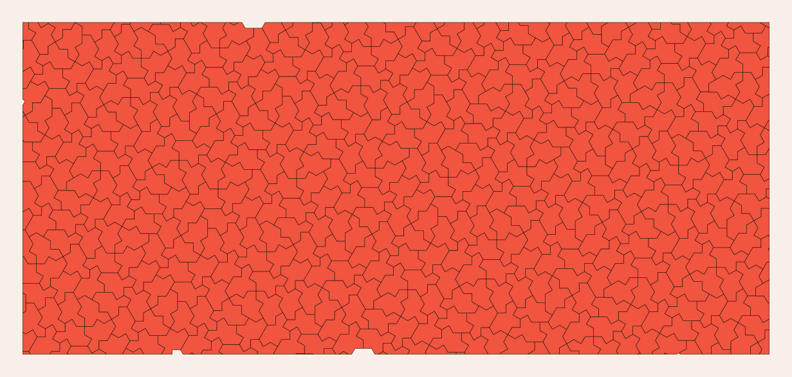

Education
Teaching a fresh mathematical discovery through manipulable patches and physical models.
A discovery you can hold
Most mathematics taught in school is centuries old. The aperiodic monotile was discovered in 2023 — by a retired print technician experimenting with paper cutouts — and its proof is genuinely deep.[1][3] That combination is rare gold for educators: a frontier result whose objects fit in a student's hand. The National Museum of Mathematics ran public competitions and exhibits around the Hat and Spectre within months of publication (see bibliography for links).

Classroom activities
- Cut-and-tile workshops — print or laser-cut Spectre outlines and challenge groups to extend a patch; the substitution clusters emerge naturally from play.
- Hierarchy walks — the animated hierarchy in Substitution tiling turns inflation rules into something students can watch and predict.
- Counting projects — tile counts per generation follow Fibonacci–Lucas recurrences, linking geometry to sequences students already know.[12]
- Chirality demonstrations — ceramic tiles cannot be flipped; the Spectre's no-reflection property becomes a physical puzzle rather than an abstract definition.[2]

See also
Aperiodic monotile, Substitution tiling
Categories: Applications